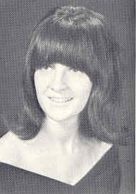
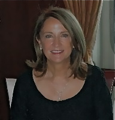
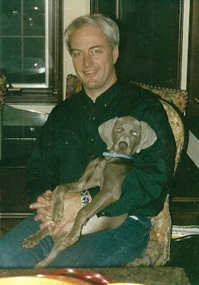
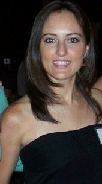
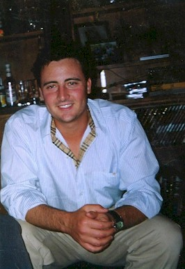

|  1967 |
|
|  2011 |
 Bob |
|  Dana |
 Michael |
The last few years have been an adjustment for me. My husband of 34 years, Bob, passed away suddenly in 2009 of esophageal cancer. My children & I feel lucky to have been a part of his life. It was a challenge but think we have finally found peace and balance.
I continue to trade stocks, futures, and currencies daily. Am partial to the metals - gold and silver. Take classes frequently around the country. Not a job for me since I love it so much. Sailed on the Forbes Investment Cruise to Alaska last year - great adventure - classes in the morning and tours in the afternoon. Plan to attend their Baltic Cruise this June. Work at our River Farm every evening when in town. Extremely therapeutic and beyond beautiful setting. Much preferred to the treadmill.
Michael is a third owner of a small oil company in Texas. One of the lucky ones who has found his passion in life. Fascinating job - with many current trends. So love our conversations. Engaged to a wonderful gal form Louisiana - she reminds us all of Bob - interests, languages, and major in school.
Dana is currently working for Michael's company, Never really liked the profession of law - but is able to use her law degree with contracts and various situations within the company. Has always loved school - so continuing to take classes.
Hope to see everyone at the Class Bash!
Update 2007:
Attended Boone JC for 2 years and then Univeristy of Iowa for 4 additional years.
Received a Masters of Science in Pediatric Nursing. Worked at U. of Iowa
Hospitals, married a cute med student who was always asking for directions.
Moved to Virginia and taught at the Medical College of Virginia for 3 years. Moved back to the
stable Midwest and started a family.
Dana is 23 and a 2nd year law student at Creighton in Omaha. Michael is 22 and a
senior at SMU in Dallas. End of tuition is in site.
Life has been good.
Anxious to see everyone!